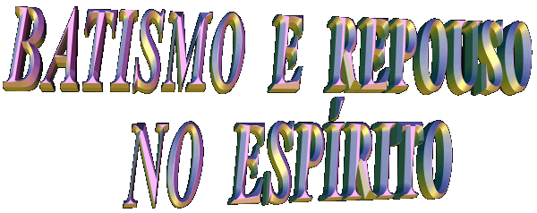

Ser Batizado no ESPÍRITO, é receber uma infusão de
graças do ESPÍRITO SANTO como aquela que JESUS derramou sobre os Discípulos e eles, com a
mesma autoridade, infundiu sobre os presbíteros e sobre toda
Comunidade Cristã. Então, ser Batizado no ESPÍRITO, equivale
a estar "cheio"dos Dons do PARÁCLITO CONSOLADOR.
aquela que JESUS derramou sobre os Discípulos e eles, com a
mesma autoridade, infundiu sobre os presbíteros e sobre toda
Comunidade Cristã. Então, ser Batizado no ESPÍRITO, equivale
a estar "cheio"dos Dons do PARÁCLITO CONSOLADOR.
"Estes desceram,
pois, para junto dos samaritanos e oravam por eles, a fim de que
recebessem o ESPÍRITO SANTO. Porque ainda não viera sobre
nenhum deles; mas somente tinham sido batizados em nome do SENHOR
JESUS. Impunham-lhes, pois, as mãos, e eles recebiam o ESPÍRITO
SANTO". (At 8,15-17 )
Dessa forma, nas reuniões carismáticas quando se
fala em "Batizar
no ESPÍRITO", o que acontece
na realidade é uma fervorosa oração de estimulo, que tem o
objetivo de motivar o ESPÍRITO SANTO que já se encontra no
interior de cada pessoa, a operar de modo especial por meio de
algum carisma, para proveito de uma coletividade e maior glória
do SENHOR. Não se trata de um novo sacramento e o nome "batismo" é impróprio, porque na realidade ele quer
significar "o
despertar" dos dons que as
pessoas receberam no Batismo e no Sacramento
do Crisma.
Excetuando o caso do Batismo de Adultos,
quando as pessoas fazem um Curso Preparatório para conhecerem e
compreenderem a utilidade e valor do Sacramento do Batismo, de um
modo geral o Batismo é ministrado a crianças na faixa  etária de 1 mês a
dois anos de idade. Também recebem o Crisma entre 8 a 12 anos de
idade. Em consequência, eles não possuem a necessária
compreensão sobre o valor e utilidade do Batismo e do Crisma na
vida. Os pais e padrinhos é quem assumem perante DEUS e a Igreja, a
responsabilidade de transmitirem aos filhos e afilhados ao longo dos anos,
em união com a catequese paroquial, os ensinamentos, deveres e
obrigações oriundos dos sacramentos, assim como suas vantagens
e todo o proveito que eles proporcionam à existência das pessoas.
Todavia, na realidade, isto quase sempre não acontece, motivado
por uma variedade de circunstâncias, e assim, o cristão
permanece desconhecendo a grandeza dos carismas que possui, que
permanecem adormecidos em seu coração.
etária de 1 mês a
dois anos de idade. Também recebem o Crisma entre 8 a 12 anos de
idade. Em consequência, eles não possuem a necessária
compreensão sobre o valor e utilidade do Batismo e do Crisma na
vida. Os pais e padrinhos é quem assumem perante DEUS e a Igreja, a
responsabilidade de transmitirem aos filhos e afilhados ao longo dos anos,
em união com a catequese paroquial, os ensinamentos, deveres e
obrigações oriundos dos sacramentos, assim como suas vantagens
e todo o proveito que eles proporcionam à existência das pessoas.
Todavia, na realidade, isto quase sempre não acontece, motivado
por uma variedade de circunstâncias, e assim, o cristão
permanece desconhecendo a grandeza dos carismas que possui, que
permanecem adormecidos em seu coração.
Mas evidentemente, não devia ser
assim, os cristãos de um modo geral, deviam ter a preocupação de
conhecer o valor dos sacramentos e procurar despertar os carismas
que estão herméticamente armazenados em seu espírito.
Na Renovação Carismática
Católica, o despertar dos carismas é denominado "Batismo no ESPÍRITO".
Entretanto, não deve haver confusão,
só existe um ESPÍRITO SANTO no qual fomos batizados, conforme disse
São Paulo:
"Pois fomos
todos batizados num só ESPÍRITO para ser um só corpo (Corpo Místico da Igreja), judeus e gregos, escravos e
livres; e todos bebemos de um só ESPÍRITO". ( 1 Cor 12,13 )
"... há um
só SENHOR, uma só fé, um só batismo". (Ef 4,5)
Um só Batismo, aquele Sacramento
que recebemos e que nos tornou membros da Igreja de CRISTO e um
único Credo , o Niceno-Constantinopolitano, (definido nos Concílios de
Nicéia e Constantinopla) que todos fiéis devem professar. Por estas
razões, é aconselhável ao invés de adotar a expressão "batizar no ESPIRITO", dizer "suplicar
ao ESPÍRITO SANTO a despertar os carismas que ELE Mesmo
colocou em nosso coração".
"REPOUSO NO ESPÍRITO"
É a experiência de cair no chão de
costas, durante a oração de uma ou mais pessoas, numa reunião
carismática.
É considerado por muitos como sendo
um carisma do ESPÍRITO e por outros, como sendo apenas parte do
Dom. Isto porque o acontecimento em sí tem duas partes: a "queda" e o "repouso"
. Afirmam alguns que somente o "repouso" constitui o carisma, enquanto a "queda" , pode ser influenciada por um estado hipnótico ou auto
sugestão, que necessariamente não estão relacionados com a
ação do ESPÍRITO SANTO.
O fato acontece da seguinte forma:
a pessoa que possui o carisma, ora sobre o fiel, impondo as mãos, na
maioria das vezes sem tocá-lo, ou tocando-o levemente, de tal
forma que a pessoa que recebe a prece, ao sentir a força da
oração cai ao chão, sempre amparada por auxiliares que
acompanham o fenômeno. Deitada no chão, a criatura que recebeu
a graça,  tem uma
experiência espiritual de valor notável, que naturalmente não
é igual num grupo de pessoas, mas que sem dúvida, produz um
efeito altamente positivo na vida de cada uma.
tem uma
experiência espiritual de valor notável, que naturalmente não
é igual num grupo de pessoas, mas que sem dúvida, produz um
efeito altamente positivo na vida de cada uma.
O fenômeno também é conhecido
pelas expressões: "Dominado
no ESPÍRITO", "Cair sob o poder" , "Dormição"
, "Morrer
no ESPÍRITO" e simplesmente
sob o nome de "A
Benção".
UM
TESTEMUNHO:
Gustavo era um gaúcho forte
e muito vaidoso, supervisor de uma firma automobilística em São
Caetano, tinha orgulho pelo cargo que ocupava e gostava de exibir
o "status" profissional. Todavia, como todas as pessoas, tinha os
seus problemas e suas dificuldades, que procurava resolve-los
porque lhe tiravam a tranquilidade. Com este objetivo, vinha
frequentando reuniões carismáticas em São Paulo no ano de
1986, mas não queria se submeter ao repouso no ESPÍRITO, tinha
vergonha e dizia: "Eu,
o supervisor Gustavo deitar no chão no meio dessa turma, com meu
terno de tropical inglês, não dá? Vou me sujar todo e ficar
com cara de tacho. E ainda, eu sou um macho, e macho que é bom
não se arrasta e nem deita no chão igual um verme. Na verdade,
a única pessoa que pode derrubar um macho, é outro macho,
tchê". Na
seqüência das semanas, sempre desejando conseguir ajuda para
superar os seus problemas, depois de cansativa insistência dos
amigos e parentes, decidiu que na reunião seguinte se submeteria
ao repouso no ESPÍRITO. E de fato ele cumpriu a palavra. Era uma
sexta-feira, mês de Abril, quando entrou no salão paroquial ao
lado da esposa. Padre Eduardo veio ao seu encontro e lhe
perguntou: "O
senhor deseja ser batizado no ESPÍRITO ?"-"Sim, eu quero", respondeu Gustavo. Não houve tempo para mais nada...
Como ele mesmo dizia que somente um outro macho poderia
derrubar um verdadeiro macho, o ESPÍRITO SANTO "sem
qualquer mágoa ou ressentimento" mostrou que é um
"super macho" , mal havia começado a
oração, em poucos segundos jogou-o ao chão
com seu "status" e toda a sua vaidade.
Depois, particularmente ele nos contou: "Quando percebi que
estava no chão, nem me importei com o meu terno e nem com
o meu orgulho de macho, estava nos braços de JESUS e ELE
curava carinhosamente todas as feridas da minha alma. Minha
vida se transformou e vejo com alegria, que agora sou outra
pessoa".
O ESPÍRITO SANTO só atua
quando é convidado e estimulado a exercitar os seus poderes, e procede
assim, porque sobretudo ELE é o próprio AMOR, a preciosa fonte
da vida, que não vai forçar ninguém a fazer o que não quer.

Próxima
Página

 Página Anterior
Página Anterior
Retorna
ao Índice